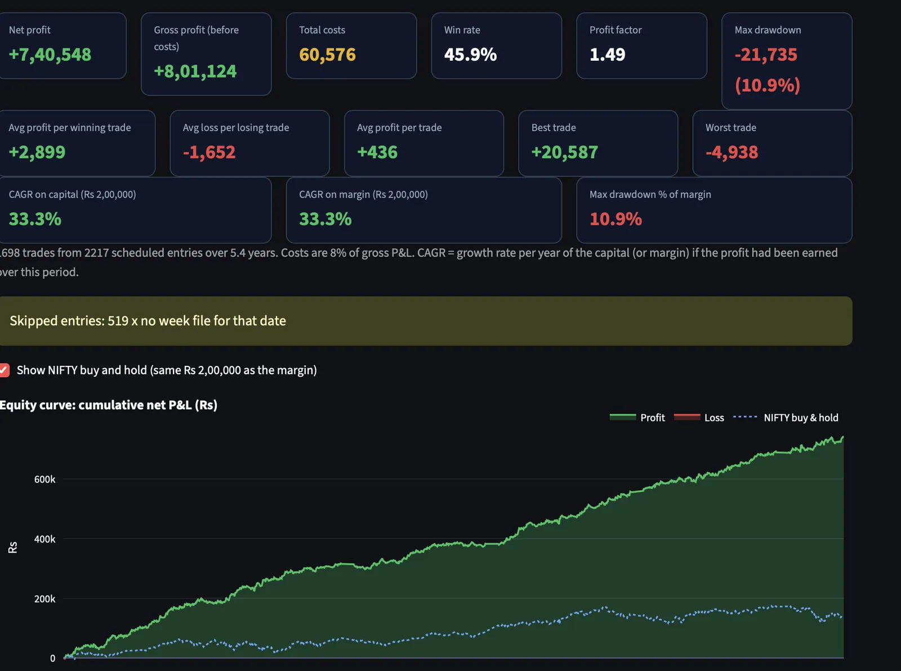
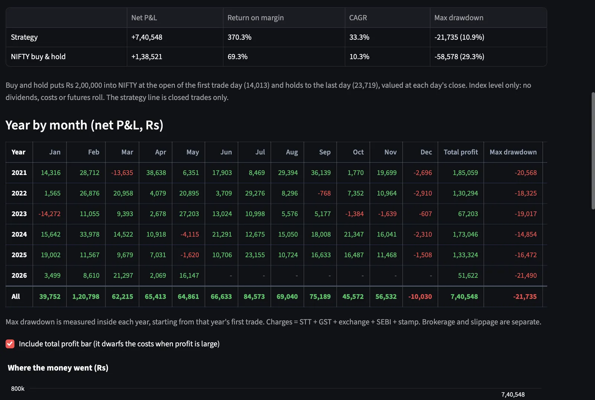
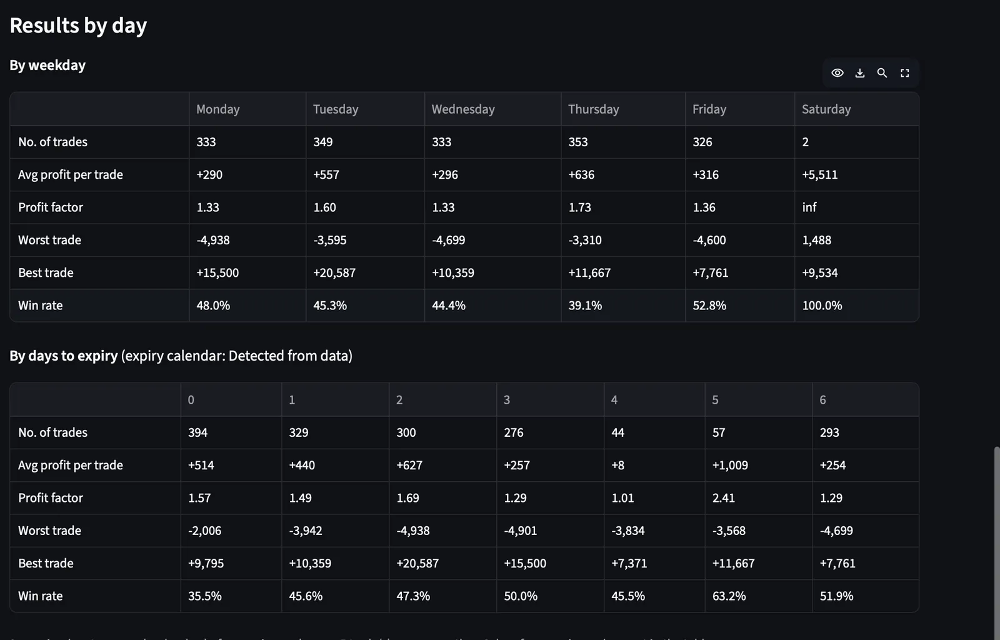
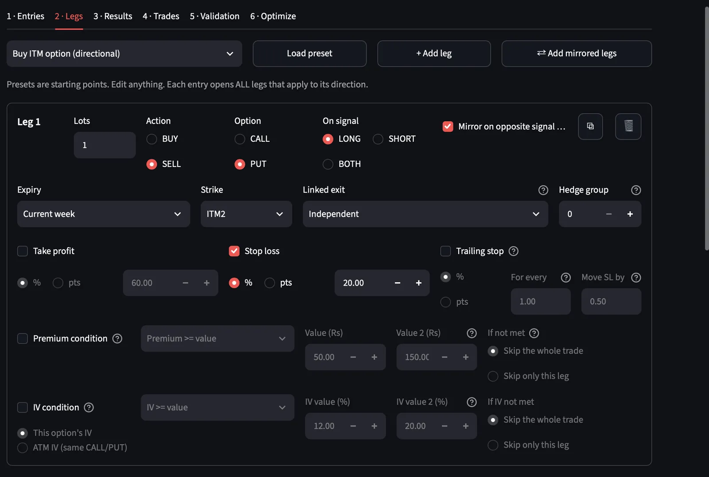
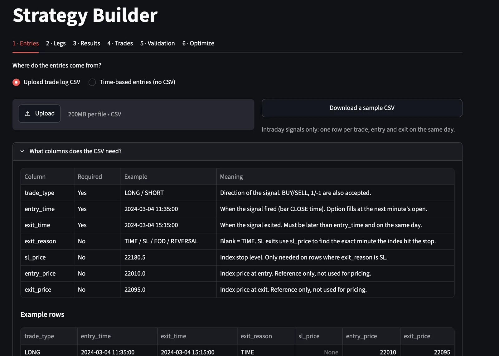
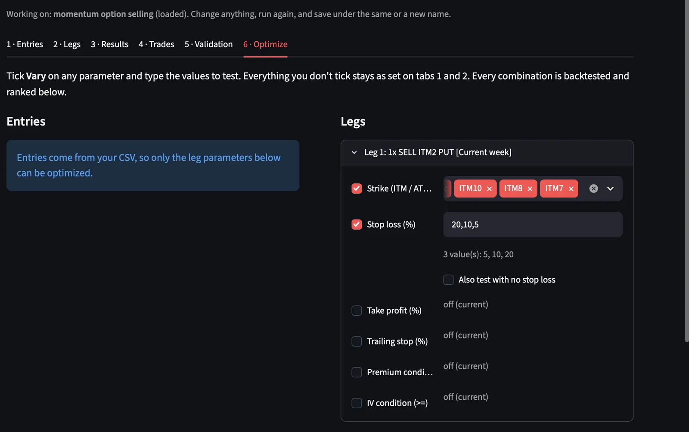
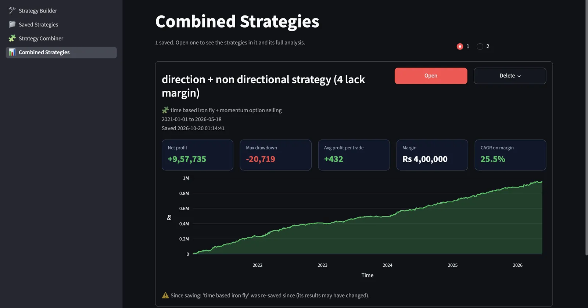

Option Lab: an options backtesting engine for NIFTY
Feed it a signal log, or just a daily entry time. It builds multi-leg option strategies and prices every leg from 1-minute option-chain data, with exchange charges, slippage, stops, trailing stops and linked exits. Then it tells you how fragile the result is.

Why I built it
My first trading account was wiped out because I backtested the index but traded options. Theta, strike choice and expiry changed the economics completely, and my backtest couldn't see any of it.
Option Lab closes that gap. A signal is only as good as the instrument you express it with, so every idea gets tested on the real option chain, at the real strike, with the real costs, before I trust it.
What it does
- Entries from any signal CSV (LONG/SHORT, entry, exit, stop) or fixed daily times, with up to N re-entries a day
- Legs: buy/sell, call/put, ATM/ITMn/OTMn strikes, current or next expiry, mirrored legs for the opposite signal
- Risk per leg: stop-loss, take-profit and trailing stop in % or points; linked exits close the whole structure when one leg stops
- Filters: premium and implied-volatility conditions, days-to-expiry selection
- Analysis: year × month P&L, weekday and DTE splits, Monte Carlo drawdowns, rolling returns, expiry payoff diagram
- Optimiser grid search and a combiner that merges strategies into one portfolio
Architecture
The engine, analytics and optimiser have no UI imports, so they run headless in scripts and tests. Streamlit is only the front end.
Signals
- Trade-log CSV or time-based entries
- Validation of every row
engine.validate_trade_log
Chain store
- 1-min option chain per day
- Binary day cache keyed on file size + mtime
- Expiry calendar inferred from the data
Leg engine
- Strike resolution from spot
- Minute-by-minute SL / TP / trailing
- Linked exits, re-entries, skips logged
Charges
- STT (rate by date), exchange, SEBI
- Stamp duty, GST, brokerage
- Slippage on every fill
Analytics
- KPIs, CAGR on margin
- Monte Carlo DD, rolling returns
- Parallel optimiser, combiner
~125× faster reruns
Parsing day CSVs dominated runtime. Caching each day's minute bars as a binary file cut a 150-trade, 4-leg backtest from about 25 s to about 0.2 s, with identical results.
Parallel optimiser
Every combination of strike, stop, target, trailing stop, premium/IV filter and entry time runs across worker processes, up to 80,000 combinations, then is ranked by risk-adjusted metrics.
Honest about gaps
When data is missing, a trade is skipped and the reason is counted, never filled with a guess. The results page shows every skip: "519 × no week file for that date".
Momentum option selling on Hawkes signals
A directional signal from a Hawkes process on NIFTY, expressed by selling an in-the-money option, and backtested end to end in Option Lab.
The thesis
Hawkes (self-exciting) processes are widely used to model how market activity clusters: one burst makes the next more likely. The model itself is well known. What differs between desks is the formulation, the thesis and the trading style built on top.
My choice is to ride momentum. When the intensity of activity on the index jumps, a move is underway, and I trade in its direction.
The signal
xt = (ranget / σt)²
// exponential-kernel Hawkes intensity
λt = κ · Σs≤t e−κ(t−s) · xs
// trade when the jump beats the day-so-far quantile
|Δλt| > Qq( |Δλ| from today's open … t )
The trade
- Long signal: sell 1 lot of the ITM2 put. Short signal: the mirrored ITM2 call.
- An in-the-money short option has high delta in the direction of the move, and theta works for the position instead of against it.
- 20% stop-loss on premium; otherwise exit when the signal exits.
Why the backtest can be trusted
- No look-ahead: the signal is built on a single timeframe from closed bars. The threshold is an expanding quantile from the day's open, so it never sees later bars.
- No fill leakage: the option fills at the next minute's open after the signal bar closes. Stops fill at the minute the index actually hit the stop.
- Fixed signal log: Option Lab replays the signals exactly as generated; nothing is re-tuned on option P&L.
Try it: how the intensity filter picks trades
Simulated prices with occasional volatility bursts, 4 sessions. Raise κ for a faster-decaying, more reactive intensity; raise the quantile to be pickier. This illustrates the mechanics only; it is not the production signal or real data.
Results vs. NIFTY buy-and-hold on the same ₹2,00,000
| Net P&L (₹) | Return on margin | CAGR | Max drawdown (₹) | |
|---|---|---|---|---|
| Momentum option selling | +7,40,548 | 370.3% | 33.3% | −21,735 (10.9%) |
| NIFTY buy & hold | +1,38,521 | 69.3% | 10.3% | −58,578 (29.3%) |
Jan 2021 – May 2026. 1 lot (65), ₹2,00,000 margin. Average win ₹2,899 vs. average loss ₹1,652; average trade ₹436. Costs total ₹60,576 (charges ₹26,769 + slippage ₹33,808 at 0.10% of premium per fill), about 8% of gross P&L. Brokerage set to zero; at ₹20 per order the net would be ₹6,72,628. 519 signals fell on dates missing from the option dataset and were skipped, not filled.
Plan for the drawdown you haven't seen yet
The realised max drawdown was about 10% of margin. That is one ordering of history. Option Lab reshuffles the daily P&L 5,000 times to see how deep the same trades could have gone in a different order.
The answer: a 27% drawdown sits at the 95th percentile, more than twice what the backtest showed. That is the number I'd size this strategy on, and it is why the case study is reported per lot, not leveraged up.
| Monte Carlo (5,000 runs) | Max DD (₹) | % of margin |
|---|---|---|
| Actual history (daily) | 20,353 | 10.2% |
| Median | 35,966 | 18.0% |
| 95th percentile | 54,322 | 27.2% |
| 99th percentile | 65,904 | 33.0% |
| Worst of 5,000 | 1,03,452 | 51.7% |


Strategy library
Strategies built and saved in Option Lab, all on the same data, the same cost model and 1 lot of 65.
| Strategy | Margin (₹) | Net P&L (₹) | CAGR | Max DD (₹) | Profit factor | Trades | Net at ₹20 / order |
|---|---|---|---|---|---|---|---|
| Momentum option selling Hawkes signals · sell ITM2 put / call · 20% SL | 2,00,000 | 7,40,548 | 33.3% | 21,735 | 1.49 | 1,698 | 6,72,628 |
| 9:16 short straddle Sell ITM1 call + put · 10% SL, trailing · ≤2/day | 5,00,000 | 6,31,205 | 16.4% | 28,600 | 1.55 | 1,771 | 4,89,525 |
| Time-based iron condor Sell OTM3, buy OTM10 wings · linked 50% SL · IV & premium filters | 2,00,000 | 2,23,951 | 15.0% | 8,243 | 2.40 | 755 | 1,03,151 |
| Combined: condor + momentum One portfolio, common period | 4,00,000 | 9,57,735 | 25.5% | 20,719 | 1.59 | 2,217 | – |
The last column is my estimate of flat ₹20 brokerage on every entry and exit order (trades × legs × 2). Multi-leg, high-frequency structures feel it most: the condor keeps less than half its profit. The combined portfolio's drawdown is lower than the momentum strategy's alone, on twice the capital.
Inside the app
Click any screen to enlarge.




Read the code
Engine, analytics, optimiser and UI are all on GitHub.